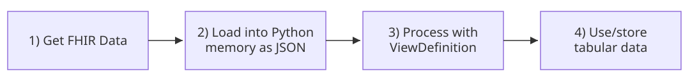

In this workshop, you will retrieve FHIR data, load it into Python, select elements with FHIRPath and SQL on FHIR ViewDefinitions, and create tables for analysis. You do not need extensive Python experience, but some familiarity will be helpful.
This is the workflow we will be using:

First, FHIR data is retrieved and loaded into memory from JSON. This JSON is then processed using the SQL on FHIR ViewDefinition approach. This produces a tabular representation of the FHIR data that can be used downstream for analysis.
NoteView/Run Notebook
This page can be viewed or run as a Jupyter notebook:
The following Python libraries are needed for this exercise. Make sure the cell below runs without errors before continuing.
import jsonfrom collections import Counter, defaultdictfrom copy import deepcopyfrom pathlib import Pathfrom urllib.parse import urljoinimport httpximport pandas as pdfrom IPython.display import JSON, displayimport sqlonfhirprint("Ready to work with FHIR data.")
Ready to work with FHIR data.
Get FHIR data
Outside this workshop, data might come from an EHR or another FHIR-enabled source. However, for this workshop, we will use synthetic data on a public FHIR R4 test server. In production, a FHIR server typically requires authentication and authorization, but this is ignored as out of scope for this workshop.
There are two input formats to consider:
Format
Typical source
What Python needs to load
JSON
FHIR read or search
A read returns a resource; a search returns a Bundle containing entries with resources.
NDJSON
FHIR Bulk Data $export or a downloaded dataset
Each nonempty line is a separate JSON resource.
This notebook does not cover FHIR represented as XML, which is an alternative to JSON but is not as widely used in modern software.
Our initial goal is to retrieve patients with blood pressure readings. There are three key questions that will guide the approach we take in getting the relevant data from the FHIR server:
Which resource types contain the information?
Which terminology identifies the observations of interest?
Where are the measurement values stored?
To determine which FHIR resource types are relevant, look at the FHIR R4 resource list. Then look at the elements in these resources to determine where measurement values are stored, and if there is relevant terminology. A Large Language Model (LLM) can be helpful for this in suggesting a starting point, but be sure to verify its suggestions against the FHIR specification and, once you retrieve it, your data.
For this example, Patient and Observation are most relevant: Patient is used to represent demographic information, while Observation has the actual blood pressure measurement.
The US Core blood pressure profile provides some additional guidance on how these values are likely represented in FHIR in the United States:
This gives us enough of a starting point to start trying to pull the data.
Constructing a FHIR search request
We will run the following search request against our FHIR server:
GET {base}/Patient
?_has:Observation:subject:code=http://loinc.org|85354-9
&_revinclude=Observation:subject
The _has parameter selects Patients referenced by an Observation where the Observation has code 85354-9 (the LOINC code identifying the blood pressure panel). The _revinclude parameter asks the server to return Observations for these Patients – without _revinclude, you would just get Patient resource instances. Observation:subject identifies the linkage between the Patient and the Observation (namely, Observation.subject.reference points to the Patient resource, for example Patient/123). Note that this will return all Observations for these Patients, so you will need to filter by code after retrieving them. _revinclude does not provide a code filter for the included Observations.
Not all FHIR servers support _revinclude. If yours does not but supports _has, you can first retrieve the relevant Patient resource instances using _has as above (but without _revinclude). Then iterate through these Patients to search for Observation resource instances using subject=Patient/{id} and code=http://loinc.org|85354-9.
Running the search request
FHIR uses HTTP, so a general-purpose library such as httpx can make requests. The helper function below checks for HTTP errors, parses JSON, and handles pagination (FHIR servers typically split search results into separate “pages”, just like search engines do). When more results are available, the response contains a next link; this function follows that link to retrieve the next page.
By default, the helper retrieves just the first three pages. You can adjust this if you want by setting max_pages=None in the call to fetch_bundles().
# Public FHIR server we are using for this workshop; you can substitute the base URL for any# FHIR server you have access to here, but if there is authentication, you will need to modify# `fetch_bundles()` to handle this.BASE_URL ="https://hapi.fhir.org/baseR4"def fetch_bundles(resource_type, params, max_pages=3): bundles = [] url =f"{BASE_URL}/{resource_type}" query = paramswith httpx.Client(timeout=60, follow_redirects=True) as client:while url: response = client.get(url, params=query) response.raise_for_status() bundle = response.json()if bundle.get("resourceType") !="Bundle":raiseValueError("Expected a FHIR search Bundle.") bundles.append(bundle)print(f"Retrieved page {len(bundles)}") next_link =next( (link["url"] for link in bundle.get("link", [])if link.get("relation") =="next"),None, ) url = urljoin(str(response.url), next_link) if next_link elseNone query =None# The next link already contains its query parameters.if max_pages isnotNoneandlen(bundles) >= max_pages:if url:print("Stopped at the page limit; more results are available.")breakreturn bundlesbp_params = {"_count": "10","_revinclude": "Observation:subject","_has:Observation:subject:code": "http://loinc.org|85354-9",}bundles_httpx = fetch_bundles("Patient", bp_params)len(bundles_httpx)
Retrieved page 1
Retrieved page 2
Retrieved page 3
Stopped at the page limit; more results are available.
3
Note that the public FHIR server we are using (https://hapi.fhir.org/baseR4) can change its contents over time, so you may not see exactly the same output as is shown on this page if you run this code yourself.
Inspecting the JSON
It can be helpful to print out the JSON returned from the FHIR server to look at the data. Note that this is synthetic data, so there is no PHI or PII.
The indent=2 parameter adds spacing to make the JSON easier to read. The [:50] at the end controls the number of lines that are printed (the JSON is quite long otherwise).
Some notebook interfaces support a collapsible tree through IPython that is even easier to read:
JSON(bundles_httpx[0])
<IPython.core.display.JSON object>
(This does not work in the web rendering of this notebook. Download the Jupyter Notebook version with the buttons at the top of this page to see this work.)
If your interface does not show an interactive tree, try the syntax highlighting provided by rich:
from rich importprint, print_jsonfrom rich.syntax import Syntax# Truncate to 50 lines.json_preview ="\n".join(json.dumps(bundles_httpx[0], indent=2, default=str).splitlines()[:50])print(Syntax(json_preview, "json", theme="monokai"))# If you want to print without truncating, run this:# print_json(data=bundles_httpx[0], default=str)
You can also save the result to a JSON file and open it in a local viewer. Here is how you dump JSON out to a file:
withopen("bundles.json", "w", encoding="utf-8") as handle: json.dump(bundles_httpx, handle, indent=2)withopen("bundles.json", encoding="utf-8") as handle: saved_bundles = json.load(handle)
A web interface like JSON Hero can be helpful for browsing through a JSON hierarchy, but note that you should never put real patient data into any online JSON viewer.
Choose one of these approaches to print out the JSON returned by the FHIR server and explore its contents.
Loading NDJSON into Python
Sometimes you will receive an NDJSON file rather than a Bundle, such as with a FHIR Bulk Data workflow.
The code below shows how to load an NDJSON file into Python:
# There are two possible sources: a web URL and a local file. The code below tries to read the# local file first, and then falls back to the web URL if the local file does not exist.ndjson_url ="https://NIH-ODSS.github.io/fhir-for-research"+"/workshops/bulk-data/synthea_10.ndjson"ndjson_path = Path("bulk-data/synthea_10.ndjson")ifnot ndjson_path.exists(): ndjson_path =Noneif ndjson_path isnotNone:# Load the file locally if possiblewith ndjson_path.open(encoding="utf-8") as handle: ndjson_resources = [json.loads(line) for line in handle if line.strip()]else:# Otherwise, load from the webwith httpx.stream("GET", ndjson_url, timeout=60, follow_redirects=True) as response: response.raise_for_status() ndjson_resources = [ json.loads(line) for line in response.iter_lines() if line.strip() ]Counter(resource["resourceType"] for resource in ndjson_resources)
This lists the count of each FHIR resource type in the NDJSON file that was loaded.
JSON(ndjson_resources[0])
<IPython.core.display.JSON object>
(JSON() does not work in the web rendering of this notebook. Download the Jupyter Notebook version with the buttons at the top of this page to see this work.)
You can loop the above approach to read multiple NDJSON files. For a large dataset, it may be necessary to apply a batch processing approach: process a subset of files, apply the ViewDefinition (described below), write the resulting rows to a file or database, and repeat. Tools like DuckDB that avoid storing all data in memory, or a database like SQLite can be useful in this scenario but are beyond the scope of this workshop.
TipWhy use NDJSON if you want tables?
If the data you need are accessible from an existing tabular source, like a data warehouse, using FHIR in NDJSON format may not make sense: it would be preferable to get the data directly from the tabular source. However, in some cases NDJSON is the only available format or you may be using a portable workflow that leverages FHIR to generate similar output across multiple data sources.
Process data with ViewDefinitions
Regardless of your data source (Bundles from a FHIR API, or NDJSON), you can use ViewDefinitions to transform the FHIR data into a tabular format.
Please review the ViewDefinition documentation for a full description of how ViewDefinition works. A few of the key concepts are also covered below.
Group FHIR resources by type
ViewDefinitions are resource-specific, so the first step is to organize the FHIR resource instances by resource type:
DATA_SOURCE ="search"# Change to "ndjson" to use the NDJSON FHIR dataif DATA_SOURCE =="search": raw_resources = [ entry["resource"]for bundle in bundles_httpxfor entry in bundle.get("entry", [])if"resource"in entry ]elif DATA_SOURCE =="ndjson": raw_resources = ndjson_resourceselse:raiseValueError("Choose 'search' or 'ndjson'.")resources = defaultdict(dict)# Organize resource instances into a dict of dicts. The outer dict uses the resource type as the key,# and the inner dict uses the resource instance id as the key. The value is the full resource.for resource in raw_resources:# Ignore any resources missing an `id`if"id"in resource: resources[resource["resourceType"]][resource["id"]] = resource{resource_type: len(items) for resource_type, items in resources.items()}
{'Patient': 30, 'Observation': 915}
Use FHIRPath to select elements
FHIRPath is a tool for selecting and extracting specific data elements from FHIR resource instances. For example, the date of birth can be selected from a Patient resource instance using the FHIRPath birthDate. Another example: name.first().family selects one of the patient’s family names (it’s possible to have multiple names in FHIR), and name.first().given.first() selects that name’s first given name.
A SQL on FHIR ViewDefinition maps the hierarchical FHIR data elements onto columns in a table. This is operationalized as a Python dictionary (example below) that then is processed by sqlonfhir.evaluate along with a list of resources.
In the example below, resource identifies the FHIR resource type targeted by this ViewDefinition. Each column item maps name (the column name) to the FHIR element via path. The second selection manages how null values are handled for the name-related elements.
In forEachOrNull, priority is given to the name element marked as official if it exists.
The sqlonfhir Python runner returns a list of dictionaries: one dictionary per row, with column names as keys and the data as values. This can be directly fed into Pandas to create a DataFrame:
patients = pd.DataFrame( patient_rows,# Put the columns in a more logical order than the default columns=["patient_id", "gender", "birth_date", "family", "given"],)patients.head()
The Patient view uses forEachOrNull so a patient without a name still appears in the output; if forEach were used, all patients without names meeting the specified selection criteria would be skipped.
Linking resource instances across resource types
The SQL on FHIR getResourceKey() function returns an identifying id for the resource in question. For example, in an Observation resource, subject.getReferenceKey(Patient) provides the Patient key using the Observation.subject reference to a Patient. This allows you to connect Observations with Patients in your data processing pipeline or analysis. Note that this function is specific to SQL on FHIR, so a general FHIRPath tool may not recognize this function.
Note that the Python SQL on FHIR implementation used here expects relative references such as Patient/123. However, synthetic data may use UUIDs instead; these must be converted to a relative reference:
patient_references = {f"{BASE_URL}/Patient/{patient['id']}": f"Patient/{patient['id']}"for patient in resources["Patient"].values()}if DATA_SOURCE =="ndjson": patient_references.update({f"urn:uuid:{patient['id']}": f"Patient/{patient['id']}"for patient in resources["Patient"].values() })else: patient_references.update({ entry["fullUrl"]: f"Patient/{entry['resource']['id']}"for bundle in bundles_httpxfor entry in bundle.get("entry", [])if entry.get("resource", {}).get("resourceType") =="Patient"and"id"in entry["resource"] and"fullUrl"in entry })def prepare_subjects(items): prepared = deepcopy(items)for resource in prepared: subject = resource.get("subject", {}) reference = subject.get("reference")if reference in patient_references: subject["reference"] = patient_references[reference]return prepared
Example: processing blood pressure data with a ViewDefinition
Below is an example of a ViewDefinition applied to the blood pressure Observation resource instances. It uses where to filter by the LOINC identifying the blood pressure panel, and uses constant to specify all the relevant LOINCs near the top of the ViewDefinition (this is helpful if you have a long ViewDefinition so constants are not scattered throughout).
# Note: The supplied Synthea NDJSON file uses LOINC `55284-4` for its blood pressure panels,# rather than the US Core code `85354-9` used in the search.BP_PANEL_CODE ="55284-4"if DATA_SOURCE =="ndjson"else"85354-9"bp_view = {"resource": "Observation","constant": [ {"name": "bp_panel", "valueCode": BP_PANEL_CODE}, {"name": "systolic_bp", "valueCode": "8480-6"}, {"name": "diastolic_bp", "valueCode": "8462-4"}, ],"where": [{"path": "code.coding.exists(system = 'http://loinc.org' and code = %bp_panel)" }],"select": [{"column": [ {"name": "observation_id", "path": "getResourceKey()"}, {"name": "patient_id", "path": "subject.getReferenceKey(Patient)"}, {"name": "effective_datetime", "path": "effective.ofType(dateTime)"}, ] }],}# We want to pull the same data elements for both systolic and diastolic blood pressure, so we# can use some nested loops to add additional columns to the ViewDefinition rather than# having to manually repeat them.for label in ("systolic", "diastolic"): component_path = ("component.where(code.coding.exists("f"system = 'http://loinc.org' and code = %{label}_bp)).first()" )for suffix, path in ( ("", "valueQuantity.value"), ("_unit", "valueQuantity.unit"), ("_unit_code", "valueQuantity.code"), ("_unit_system", "valueQuantity.system"), ("_absent_reason", "dataAbsentReason.coding.first().code"), ): bp_view["select"][0]["column"].append({"name": f"{label}{suffix}","path": f"{component_path}.{path}", })bp_rows = sqlonfhir.evaluate(prepare_subjects(list(resources["Observation"].values())), deepcopy(bp_view))blood_pressures = pd.DataFrame( bp_rows, columns=[column["name"] for column in bp_view["select"][0]["column"]],)blood_pressures.head()
observation_id
patient_id
effective_datetime
systolic
systolic_unit
systolic_unit_code
systolic_unit_system
systolic_absent_reason
diastolic
diastolic_unit
diastolic_unit_code
diastolic_unit_system
diastolic_absent_reason
0
76414303-d526-4400-b8fb-32eb6840d1d5
9e85889f-b9a1-4eef-a2d5-cdac0808a65c
2026-08-29T01:14:03.95769+00:00
148
mmHg
None
None
None
88
mmHg
None
None
None
1
bfc89c85-1467-4391-bdbf-493336f9c33d
9e85889f-b9a1-4eef-a2d5-cdac0808a65c
2026-05-04T01:14:03.95769+00:00
136
mmHg
None
None
None
84
mmHg
None
None
None
2
33671
33791
2026-03-02
174.0
mm[Hg]
mm[Hg]
http://unitsofmeasure.org
None
92.0
mm[Hg]
mm[Hg]
http://unitsofmeasure.org
None
3
33674
33791
2026-03-31
141.0
mm[Hg]
mm[Hg]
http://unitsofmeasure.org
None
92.0
mm[Hg]
mm[Hg]
http://unitsofmeasure.org
None
4
33677
33791
2026-05-08
141.0
mm[Hg]
mm[Hg]
http://unitsofmeasure.org
None
96.0
mm[Hg]
mm[Hg]
http://unitsofmeasure.org
None
Note that effective_datetime is populated only for Observation.effectiveDateTime, but some Observation resource instances instead use Observation.effectivePeriod, which would need separate mapping.
Using the tabular data
Data from the Patient resource instances can be merged into the blood pressure data:
In the code above, the many_to_one check prevents duplicate Patient keys from silently creating duplicate rows. The indicator parameter adds a _merge column to the DataFrame to show if a given row was matched with a patient or not.
print(f"Patients: {len(patients)}")print(f"Blood pressure readings: {len(blood_pressures)}")print(f"Readings without a matched Patient: {(bp_with_patients['_merge'] =='left_only').sum()}")
Patients: 30
Blood pressure readings: 93
Readings without a matched Patient: 0
The bp_with_patients DataFrame is now in a format that is much more useful for analysis than the raw FHIR data. You can write this out to a .csv file with code like this:
The example below shows how you can search for Patients with an ICD-10-CM E11.9 (type 2 diabetes mellitus without complications) Condition. This follows the same pattern as the blood pressure example above.
Here is the code to do the FHIR search:
condition_bundles = fetch_bundles("Patient", {"_count": "10","_revinclude": "Condition:patient","_has:Condition:patient:code": "http://hl7.org/fhir/sid/icd-10-cm|E11.9",})condition_resources = { (entry["resource"]["resourceType"], entry["resource"]["id"]): entry["resource"]for bundle in condition_bundlesfor entry in bundle.get("entry", [])if"id"in entry.get("resource", {})}# Normalize references using the Patients returned by this search.patient_references.update({f"{BASE_URL}/Patient/{resource['id']}": f"Patient/{resource['id']}"for resource in condition_resources.values()if resource["resourceType"] =="Patient"})patient_references.update({ entry["fullUrl"]: f"Patient/{entry['resource']['id']}"for bundle in condition_bundlesfor entry in bundle.get("entry", [])if entry.get("resource", {}).get("resourceType") =="Patient"and"id"in entry["resource"] and"fullUrl"in entry})
Note that like with Observation above, this will return all Condition resource instances for the selected patients (not just those Conditions indicating E11.9), so filtering will be required in the ViewDefinition: